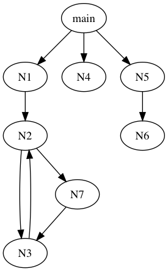
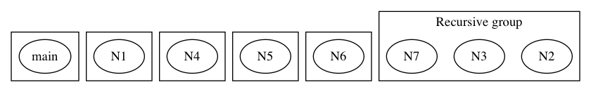

Golang escape analysis
This article introduces the principle and general implementation of golang's escape analysis.
Table of Contents
1 Examples
1.1 example 1
// go tool compile -m -m -m -m -l main.go package main func f1(a int) (b *int) { b = &a return }
compiler output:
escAnalyze [0xc000376000] . DCLFUNC l(4) esc(no) tc(1) FUNC-func(int) *int . DCLFUNC-body . . AS l(5) tc(1) . . . NAME-main.b a(true) g(1) l(4) x(0) class(PPARAMOUT) tc(1) assigned PTR-*int . . . ADDR l(5) tc(1) PTR-*int . . . . NAME-main.a a(true) g(2) l(4) x(0) class(PPARAM) tc(1) addrtaken used int . . RETURN l(6) tc(1) main.go:5:4:[1] f1 stmt: b = &a main.go:6:2:[1] f1 stmt: return main.go:4:9: moved to heap: a
Var a is referenced by b, then b is returned to the
caller. Since we don't know what the caller will do on var b (may
assign it to a global var), so a needs to be stored in the heap.
1.2 example 2
// go tool compile -m -m -m -m -l main.go package main func f2(a *int) *int { return a }
escAnalyze [0xc0002d62c0] . DCLFUNC l(9) esc(no) tc(1) FUNC-func(*int) *int . DCLFUNC-body . . RETURN l(10) tc(1) . . RETURN-list . . . NAME-main.a a(true) g(2) l(9) x(0) class(PPARAM) tc(1) used PTR-*int main.go:10:2:[1] f2 stmt: return a main.go:9:9: leaking param: a to result ~r1 level=0
~r1 in compiler output means 1st return variable, it's auto
generated. func f2 just return param a, so it a doesn't need to
move to heap(no one know its addr at all after the end of f2's execution).
For its caller, if the caller has a variable x, caller uses &x as
the param of f2, then assign the result to a global var. Obviously,
x needs to move to heap. So when caller analyzes x whether it needs
move to heap, caller needs the information of f2, which is the sentence
in compiler output:
leaking param: a to result ~r1 level=0
1.3 example 3
// go tool compile -m -m -m -m -l main.go package main var g *int func ff(a *int) { g = a } func f() { a := 1 ff(&a) }
escAnalyze [0xc000396000] . DCLFUNC l(6) esc(no) tc(1) FUNC-func(*int) . DCLFUNC-body . . AS l(7) tc(1) . . . NAME-main.g a(true) l(4) x(0) class(PEXTERN) tc(1) assigned PTR-*int . . . NAME-main.a a(true) g(1) l(6) x(0) class(PPARAM) tc(1) used PTR-*int main.go:7:4:[1] ff stmt: g = a main.go:6:9: leaking param: a escAnalyze [0xc000396160] . DCLFUNC l(10) esc(no) tc(1) FUNC-func() . DCLFUNC-body . ........ main.go:11:4:[1] f stmt: a := 1 main.go:11:2:[1] f stmt: var a int main.go:12:4:[1] f stmt: ff(&a) main.go:11:2: moved to heap: a
As mentioned in the previous example, f as a caller, when analyzing
a need to move to heap, need the auxiliary information of ff.
For this example, it is:
leaking param: a
So var a move to heap in f.
1.4 example 4
// go tool compile -m -m -m -m -l main.go package main type A interface { F(a *int) } func f() { var a A b := 1 a.F(&b) }
escAnalyze [0xc0002e0160]
. DCLFUNC l(8) esc(no) tc(1) FUNC-func()
. DCLFUNC-body
. ............
main.go:9:6:[1] f stmt: var a A
main.go:9:6:[1] f stmt: a = <N>
main.go:10:4:[1] f stmt: b := 1
main.go:10:2:[1] f stmt: var b int
main.go:11:5:[1] f stmt: a.F(&b)
main.go:10:2: moved to heap: b
escAnalyze [0xc0002e02c0]
. DCLFUNC l(1) esc(no) tc(1) FUNC-method(A) func(*int)
. DCLFUNC-body
. . CALLINTER l(1) tc(1)
. . . DOTINTER l(1) x(0) tc(1) main.F FUNC-method(*struct {}) func(*int)
. . . . NAME-main..this a(true) g(1) l(1) x(0) class(PPARAM) tc(1) used main.A
. . CALLINTER-list
. . . NAME-main.a a(true) g(2) l(5) x(0) class(PPARAM) tc(1) used PTR-*int
<autogenerated>:1:[1] A.F stmt: .this.F(a)
<autogenerated>:1: leaking param: .this
main.go:5:4: leaking param: a
In this example, the type of a is A (interface), so a.F(...) is
dynamic call. For this case, put a and b move to heap directly.
The escape analysis of golang can't analyze the param in the case of
dynamic call. After all, it don’t know the concrete implementation
of a.F at compile time.
2 high level steps of escape analysis
Analyze all defined functions from the bottom up(visitBottomUp),
analyze a set of functions (recursively with each other) or a
function each time using escapeFuncs.
The overview of escapeFuncs:
- Construct data-flow graph from syntax trees. (
initFunc,walkFunc)- new location for all lcoal variable
- walk the body of function
- Computes the minimal dereferences between all pairs of locations,
mark the location that needs to escape to heap. (
walkAll) - Find the locations that escapes to the heap. (
finish)
3 Source Analysis
3.1 visitBottomUp
The entry in escape analysis is the escapes function.
func escapes(all []*Node) { visitBottomUp(all, escAnalyze) } func escAnalyze(all []*Node, recursive bool) { //... } func visitBottomUp(list []*Node, analyze func(list []*Node, recursive bool)) { // ... for _, n := range list { if n.Op == ODCLFUNC && !n.Func.IsHiddenClosure() { v.visit(n) } } }
On the whole, []*Node can be seen as a list of trees, also as a graph, because
some subtrees are connected to each other.

As you can see from the name of visitBottomUp, it will traverse from bottom to
top, and its argument analyze's first argument list is []*Node, its
content is a list of functions, each function will only call other functions in
the list or functions that have been passed in previous invocations of analyze
Said in the previous paragraph, the function in list will only call the
functions in list.
This includes 2 cases:
- Several functions that are called recursively to each other
- Single function
For the above case in the picture, let's write the corresponding code and print out the output of the compiler.
// go tool compile -m -m -m -m -l main.go package main func main() { N2() N1() N4() N5() } func N1() { N2() } func N4() {} func N5() { N6() } func N2() { N3() N7() } func N6() {} func N3() { N2() } func N7() { N3() }
compiler output:
escAnalyze [0xc0002ca6e0] ## N2 . DCLFUNC l(20) esc(no) tc(1) FUNC-func() . DCLFUNC-body . . CALLFUNC l(21) tc(1) . . . NAME-main.N3 a(true) l(26) x(0) class(PFUNC) tc(1) used FUNC-func() . . CALLFUNC l(22) tc(1) . . . NAME-main.N7 a(true) l(30) x(0) class(PFUNC) tc(1) used FUNC-func() escAnalyze [0xc0002ca9a0] ## N3 . DCLFUNC l(26) esc(no) tc(1) FUNC-func() . DCLFUNC-body . . CALLFUNC l(27) tc(1) . . . NAME-main.N2 a(true) l(20) x(0) class(PFUNC) tc(1) used FUNC-func() escAnalyze [0xc0002cab00] ## N7 . DCLFUNC l(30) esc(no) tc(1) FUNC-func() . DCLFUNC-body . . CALLFUNC l(31) tc(1) . . . NAME-main.N3 a(true) l(26) x(0) class(PFUNC) tc(1) used FUNC-func() main.go:21:4:[1] N2 stmt: N3() main.go:22:4:[1] N2 stmt: N7() main.go:27:4:[1] N3 stmt: N2() main.go:31:4:[1] N7 stmt: N3() escAnalyze [0xc0002ca2c0] ## N1 . DCLFUNC l(11) esc(no) tc(1) FUNC-func() . DCLFUNC-body . . CALLFUNC l(12) tc(1) . . . NAME-main.N2 a(true) l(20) x(0) class(PFUNC) tc(1) used FUNC-func() main.go:12:4:[1] N1 stmt: N2() escAnalyze [0xc0002ca420] ## N4 . DCLFUNC l(15) esc(no) tc(1) FUNC-func() . DCLFUNC-body . . EMPTY l(15) tc(1) main.go:15:6:[1] N4 stmt: escAnalyze [0xc0002ca840] ## N6 . DCLFUNC l(25) esc(no) tc(1) FUNC-func() . DCLFUNC-body . . EMPTY l(25) tc(1) main.go:25:6:[1] N6 stmt: escAnalyze [0xc0002ca580] ## N5 . DCLFUNC l(17) esc(no) tc(1) FUNC-func() . DCLFUNC-body . . CALLFUNC l(18) tc(1) . . . NAME-main.N6 a(true) l(25) x(0) class(PFUNC) tc(1) used FUNC-func() main.go:18:4:[1] N5 stmt: N6() escAnalyze [0xc0002ca160] ## main . DCLFUNC l(4) esc(no) tc(1) FUNC-func() . DCLFUNC-body . . CALLFUNC l(5) tc(1) . . . NAME-main.N2 a(true) l(20) x(0) class(PFUNC) tc(1) used FUNC-func() . . CALLFUNC l(6) tc(1) . . . NAME-main.N1 a(true) l(11) x(0) class(PFUNC) tc(1) used FUNC-func() . . CALLFUNC l(7) tc(1) . . . NAME-main.N4 a(true) l(15) x(0) class(PFUNC) tc(1) used FUNC-func() . . CALLFUNC l(8) tc(1) . . . NAME-main.N5 a(true) l(17) x(0) class(PFUNC) tc(1) used FUNC-func() main.go:5:4:[1] main stmt: N2() main.go:6:4:[1] main stmt: N1() main.go:7:4:[1] main stmt: N4() main.go:8:4:[1] main stmt: N5()
We can see that the functions that recursive each other are in a group, and the other functions are each in a group, as shown in the figure.

3.2 TODO walkOne
3.3 TODO outlives
;; outlives reports whether values stored in l may survive beyond
;; other's lifetime if stack allocated.
func (e *Escape) outlives(l, other *EscLocation) bool
这个函数用于分析 l